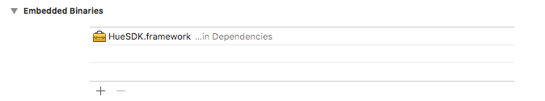
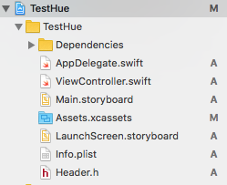

iOS / PHILIPS HUE SDK
HUE SDK for iOS를 받아서 import하고, Sample Hue Controller를 만들어보자.
Prerequisites
Downloads
- HueSDK from Philips Github: HueSDK.framework
- HueSDK iOS Framework Guide: HueSDK iOS Framework Guide
env.
- macOS 10.13 (High Sierra)
- Xcode 9
- iOS 11.3
- Swift4
Getting Started
1. 새 Xcode 프로젝트 만들기
- Project Name: TestHue
- Template: Single View
- Language: Swift
2. Framework 추가하기
주의 >> HueSDK iOS Framework Guide를 보면 device, simulator의 Framework를 한번에 추가하는 방법으로 알려주는데, 빠른 실행과 결과를 보기 위해 device Framework만 추가한다.
- Project Directory에 Dependencies 폴더 생성하고, HueSDK.framework 복사
- home/TestHue/Dependencies/HueSDK.framework (for device)
- home/TestHue/TestHue.xcodeproj
Xcode에서 Dependencies그룹을 생성하고, 위에서 복사한 HueSDK.framework을 drag&drop으로 Add Reference

Target > Build Phases > Link Binary With Libraries에 Project Navigation에서
HueSDK.framework을 drag&drop으로 Add
Target > General > Embedded Binaries에 HueSDK.framework 추가
Objective-C Briding Header추가를 위해 Header.h 추가
- New File > Header file
- File Name: Header.h

- File Name: Header.h
- Target > Build Settings > Objective-C Briding Header 수정
- TestHue/Header.h 입력
- Header.h에 다음 추가
1
3. Enable Bitcode
- No
4. Build & Run
- HueSDK.framework for device만 추가했기때문에
- Build전에 대상 기기가 Device나 Generic iOS Device가 선택되어있는지 확인한다.

Using SDK Guide
- https://www.developers.meethue.com/ 에 회원등록하면, 자세한 Hue SDK Guide를 확인할 수 있다.
맛보기
HueSDK가 잘 링크되었는지 확인하기 위해서 아래 코드를 삽입해서 Build & Run 해본다.
1 | let documentsPath = NSSearchPathForDirectoriesInDomains(.documentDirectory, .userDomainMask, true)[0] |